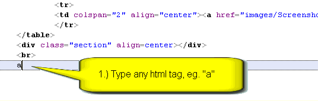

SmartTagTabbing - это специальная технология для работы с документами HTML (она также может применяться под лексером PHP в местах, где находится HTML-разметка). Исходная идея взята из отличного редактора Intype.
Технология состоит из двух главных частей:
В редакторе введите имя произвольного тега, скажем "a" или "title", без укловых скобок и нажмите клавишу Tab. Полная форма тега появится на месте введенного слова.
| a | → | <a href="http://www.com/" title="Title" target="_blank"></a> |
| td | → | <td></td> |
Если введено некорректное слово, то Tab ничего не сделает (а в
статус-строке появится предупреждение).
Это похоже на поведение при раскрытии
"Шаблонов кода", но действует лучше, так как:
После раскрытия имени тега в полную форму, можно нажимать Tab дальше
- каретка и выделение будут перепрыгивать по атрибутам (только для
сложных тегов, типа <a>, <img> и др.):

Видно, что нажимая Tab пока каретка внутри тега, можно быстро перебрать атрибуты и удалить лишние (они как раз выделяются целиком).
Замечания о перепрыгивании
Изменить уполчательную полную форму тега или добавить новые теги, можно, отредактировав файл "Html_Tabbing.ini" из папки "Data\autocomplete" в папке SynWrite. Нужно не забывать, что этот файл перезаписывается при каждой инсталяции, так что измененную версию нужно самостоятельно сохранять.